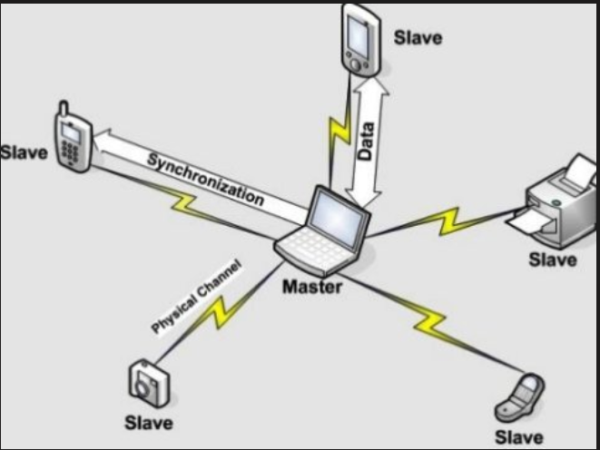
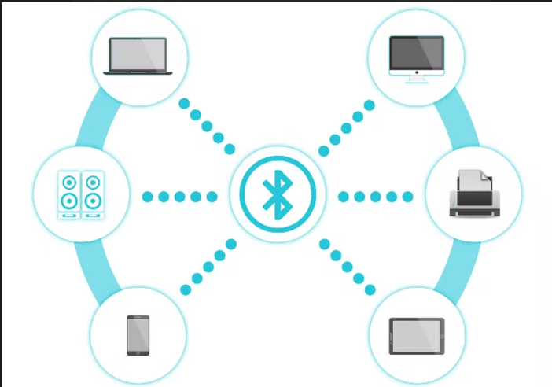

BLUETOOTH:
Bluetooth é uma tecnologia de comunicação sem fio que permite a troca de dados entre dispositivos a curtas distâncias,
usando ondas de rádio de baixa potência. É amplamente utilizada para conectar dispositivos como fones de ouvido,
teclados, mouses, smartphones e muitos outros dispositivos eletrônicos.
qual o funcionamento?
Transmissão de Dados: Bluetooth opera na faixa de frequência de 2,4 GHz, que é uma faixa de
radiofrequência licenciada
globalmente para comunicação sem fio. Os dispositivos Bluetooth usam técnicas de modulação
para enviar dados através dessas ondas de rádio.
Emparelhamento: Para que dois dispositivos Bluetooth se comuniquem, eles precisam ser emparelhados.
Isso geralmente
envolve a inserção de um código de emparelhamento para garantir que a conexão seja segura.
Conexão e Comunicação: Após o emparelhamento, os dispositivos estabelecem uma conexão e trocam
dados usando pacotes de informação. Bluetooth utiliza um método chamado "Frequency Hopping
Spread Spectrum" (FHSS), onde os sinais de rádio
saltam rapidamente entre diferentes frequências para reduzir interferências e aumentar
a segurança


onde esta a matematica?
Modulação de Dados: Bluetooth utiliza esquemas de modulação como Gaussian Frequency Shift Keying
(GFSK), onde a frequência do sinal é alterada para representar dados. A matemática aqui envolve a
transformação de dados binários em sinais de frequência.
Frequency Hopping: A técnica de "Frequency Hopping Spread Spectrum" usa algoritmos matemáticos para
determinar quais frequências usar em sequência para minimizar a interferência e aumentar a
segurança. Isso requer cálculos para garantir a eficiência da troca de frequências.
Codificação e Decodificação: Os dados transmitidos são codificados para correção de erros e
decodificados na recepção. Algoritmos matemáticos são usados para detectar e corrigir erros
na transmissão.